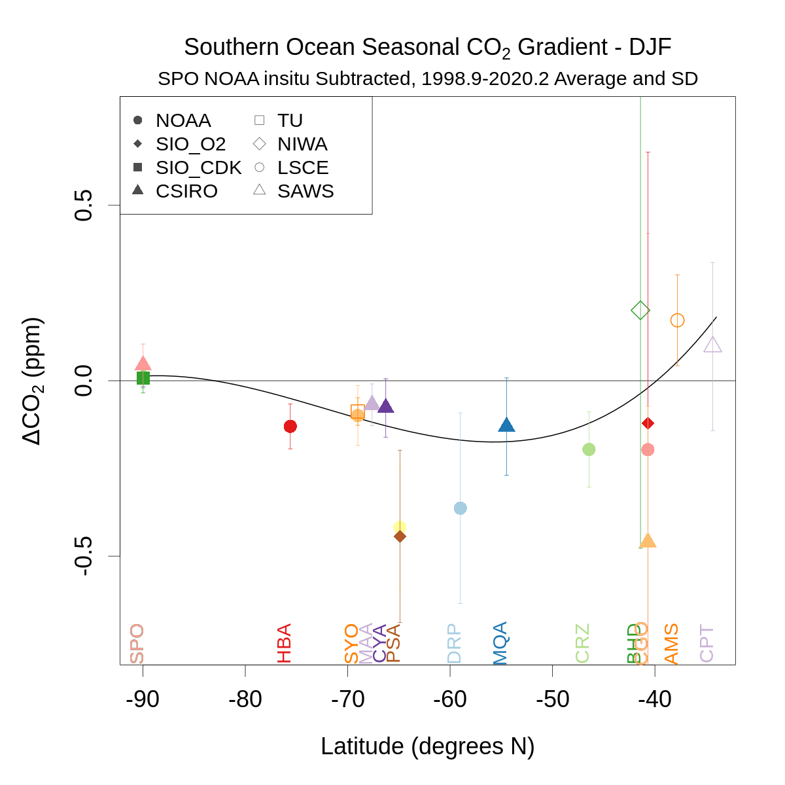
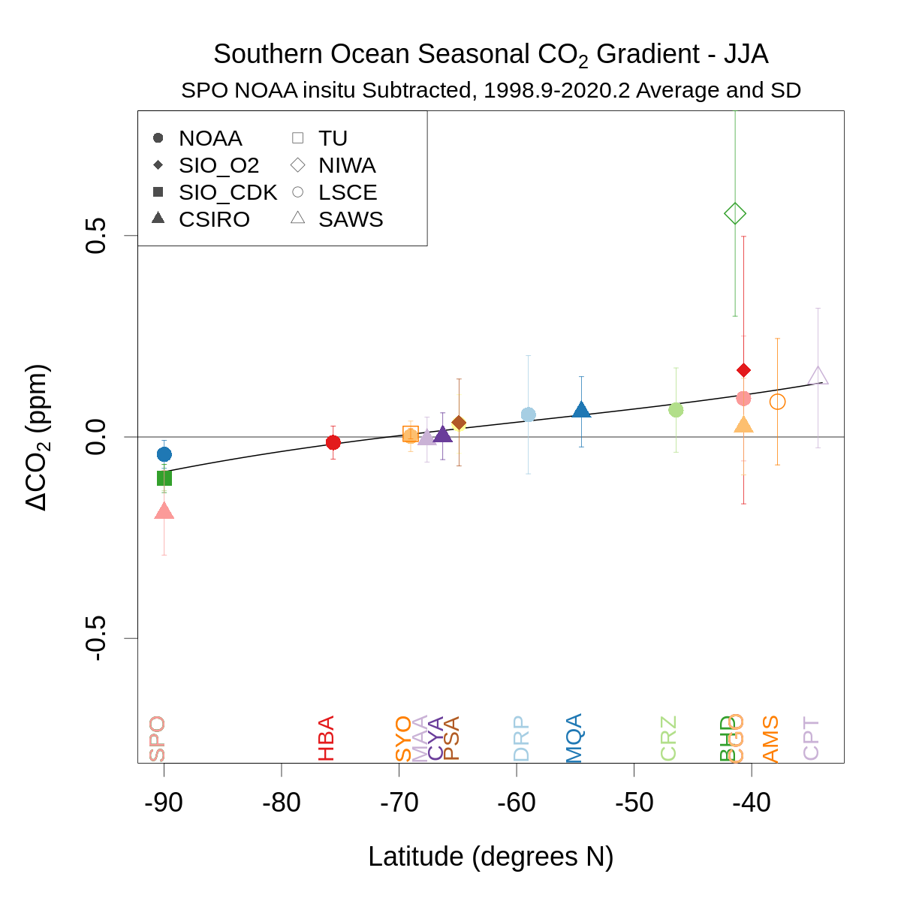
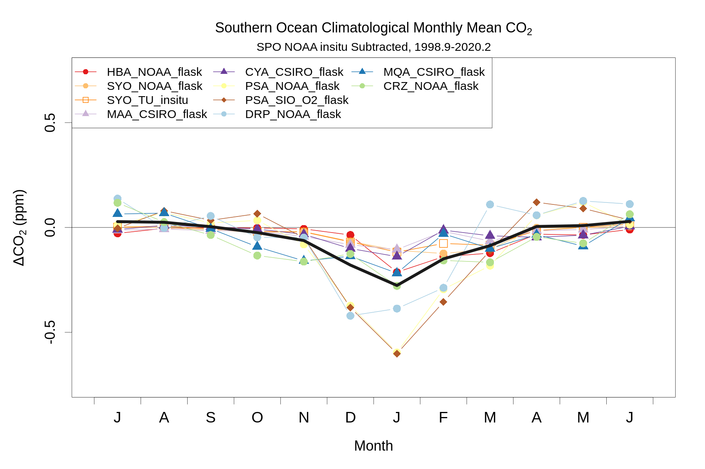

Process surface model output¶
R program to process Southern Ocean model station concentrations
library('ncdf4')
library('yaml')
library('RColorBrewer')
project_tmpdir_obs = read_yaml('../_config_calc.yml')$project_tmpdir_obs
model_data_dir = read_yaml('../_config_calc.yml')$model_data_dir
username = Sys.info()['user']
project_tmpdir_obs = gsub('\\{\\{env\\[\'USER\'\\]\\}\\}', username, project_tmpdir_obs)
model_data_dir = gsub('\\{\\{env\\[\'USER\'\\]\\}\\}', username, model_data_dir)
# Options:
minnmon=2 # minimum number of months to use for a seasonal average
meanwin=c(1998.9,2020.2) # window for calculating means
trendwin=c(2005.0,2020.2) # window for calculating trends
thisyear=2020 # latest year to process (figure titles assume synonymous with 'present')
# Select which sites to use:
stationlist=read.table('SO_CO2_stationlist_for_models.txt',header=T,stringsAsFactors=F) # use = 0 for do not use, 2 for SO, 1 was for reference but no longer used - use refcol below
print(stationlist)
# Specify lab codes
labs=c('NOAA','SIO_O2','SIO_CDK','CSIRO','SAWS','LSCE','TU','NIWA')
labids=c(1,4,426,2,36,11,8,15)
# Specify ObsPack file location (used as template for CAMSv20r1)
gvp60dir='obspack_co2_1_GLOBALVIEWplus_v6.0_2020-09-11/data/nc'
station lab method use lat lon masl
1 SPO NOAA insitu 1 -89.9800 -24.8000 2810
2 SPO NOAA flask 0 -89.9800 -24.8000 2810
3 SPO SIO_O2 flask 0 -89.9800 -24.8000 2810
4 SPO SIO_CDK flask 0 -89.9800 -24.8000 2810
5 SPO CSIRO flask 0 -89.9800 -24.8000 2810
6 HBA NOAA flask 2 -75.6050 -26.2100 10
7 SYO NOAA flask 2 -69.0125 39.5900 14
8 SYO TU insitu 2 -69.0125 39.5900 14
9 MAA CSIRO flask 2 -67.6170 62.8670 32
10 CYA CSIRO flask 2 -66.2830 110.5170 47
11 PSA NOAA flask 2 -64.9000 -64.0000 10
12 PSA SIO_O2 flask 2 -64.9000 -64.0000 10
13 DRP NOAA flask 2 -59.0000 -64.6900 10
14 MQA CSIRO flask 2 -54.4830 158.9670 6
15 CRZ NOAA flask 2 -46.4337 51.8478 197
16 BHD NIWA insitu 0 -41.4083 174.8710 85
17 CGO NOAA flask 0 -40.6830 144.6900 164
18 CGO SIO_O2 flask 0 -40.6830 144.6900 104
19 CGO CSIRO flask 0 -40.6830 144.6900 164
20 AMS LSCE insitu 0 -37.7983 77.5378 55
21 CPT SAWS insitu 0 -34.3523 18.4891 230
Loop on models¶
bbsnames=c('CAMSv20r1','CT2017','CT2019B','CTE2018','CTE2020','MIROC','CarboScopeAdjSO','CarboScopeSC','CarboScope','TM5pCO2')
mclnames=c('CAMSv20r1','CT2017','CT2019B','CTE2018','CTE2020','MIROC','s99oc_ADJocI40S_v2020','s99oc_SOCCOM_v2020','s99oc_v2020','TM5-Flux-')
for(model in bbsnames){
# Specify cases and particulars
if(substr(model,1,3)=='CT2'){
cases=c(1:5)
} else if(substr(model,1,3)=='CTE'){
cases=c(1,3:5) # do not need BG
} else if(substr(model,1,10)=='CarboScope'){
cases=c(1,3:5) # no BG
} else if(model=='MIROC'){
mirocyears=seq(1996,2019)
cases=c(1,3:5) # do not need BG
} else if(model=='CAMSv20r1'){
modobspacktotfile='v20r1_obspack6.txt' # flat text files for all data
modobspacklndfile='v20r1_obspack6_testland.txt'
modobspackocefile='v20r1_obspack6_testocean.txt'
modobspackfosfile='v20r1_obspack6_testffoss.txt'
obsobspackdir=paste(project_tmpdir_obs,'/',gvp60dir,sep='') # read in actual data files from same GV+ version, then swap in from single CAMS file
cases=c(1,3:5)
} else if(model=='TM5pCO2'){
cases=c(6:9)
}
# Loop on cases
for(case in cases){
# CT, CTE, CAMS, MIROC, CarboScope (comps not used by CAMS or CarboScope)
if(case==1){ comps=c(1,1,1,1,1); subdir='' } # bg, ff, ocean, bio, and fires (all)
if(case==2){ comps=c(1,0,0,0,0); subdir='/BG' } # bg only
if(case==3){ comps=c(0,1,0,0,0); subdir='/FF' } # ff only
if(case==4){ comps=c(0,0,1,0,0); subdir='/OCEAN' } # ocean only
if(case==5){ comps=c(0,0,0,1,1); subdir='/LAND' } # bio, and fires only
# TM5pCO2
if(case==6){ run='mrf' }
if(case==7){ run='m0f' }
if(case==8){ run='mwf' }
if(case==9){ run='mmf' }
#if(case>5){ subdir=paste('/',toupper(run),sep='') }
if(case>5){
subdir=''
mclname=paste(mclnames[which(bbsnames==model)],run,sep='')
} else {
mclname=mclnames[which(bbsnames==model)]
}
# Specify model subdirectory
modobspackdir=paste(model_data_dir,'/',mclname,sep='')
print(paste(mclname,subdir,sep=''))
# Read in station output
# set up arrays
allsta=data.frame(cbind(rep(seq(1957,thisyear),each=12),rep(seq(1,12),times=thisyear-1957+1)))
colnames(allsta)=c('year','month')
yrfrac=allsta$year+(allsta$mon-0.5)/12
monseas=rep(1,nrow(allsta)) # DJF
monseas[allsta$month>2&allsta$month<6]=2 # MAM
monseas[allsta$month>5&allsta$month<9]=3 # JJA
monseas[allsta$month>8&allsta$month<12]=4 # SON
seasyear=trunc(yrfrac+1/12) # shift Dec to next year
allseas=data.frame(cbind(aggregate(monseas,by=list(seas=monseas,year=seasyear),mean)$x,aggregate(yrfrac,by=list(seas=monseas,year=seasyear),mean)$x))
allnmon=aggregate(!is.na(monseas),by=list(seas=monseas,year=seasyear),sum)$x # all 3 except first and last DJF
colnames(allseas)=c('seas','yrfrac')
alllat=NULL
alllon=NULL
allalt=NULL
allann=data.frame(cbind(aggregate(yrfrac,by=list(year=allsta$year),mean)$x))
allnmonann=aggregate(!is.na(monseas),by=list(year=allsta$year),sum)$x
colnames(allann)=c('yrfrac')
# loop over stations
for(i in c(1:nrow(stationlist))){
staco2=NULL
sta=stationlist$station[i]
lab=stationlist$lab[i]
meth=stationlist$method[i]
use=stationlist$use[i]
#print(c(sta,lab,meth,use))
# match ObsPack file names
if(sta=='DRP'){ type='shipboard' } else { type='surface' }
if(lab=='NOAA'&meth=='insitu') { filt='allvalid' } else if(lab=='SAWS'){ filt='marine' } else if(lab=='NIWA'){ filt='baseline' } else { filt='representative' }
if((model=='CT2019B'|model=='TM5pCO2'|model=='MIROC'|model=='CAMSv20r1'|model=='CTE2018'|model=='CTE2020')&sta=='SYO'&lab=='TU'){ filt='allvalid' } # rest = representative
labid=labids[which(labs==lab)]
if(substr(model,1,10)!='CarboScope'&model!='TM5pCO2'&model!='CAMSv20r1'&model!='CTE2018') stanc=nc_open(paste(modobspackdir,'/simulated-obs/co2_',tolower(sta),'_',type,'-',meth,'_',labid,'_',filt,'.nc',sep=''))
if(model=='CT2017'|model=='CT2019B'){
dummyvar='model_bg'
stadat=data.frame(cbind(ncvar_get(stanc,'time_decimal'),t(ncvar_get(stanc,'time_components')),ncvar_get(stanc,dummyvar)*1E6)) ; colnames(stadat)=c('date','year','mon','day','hour','min','sec','co2')
stadat$co2=(ncvar_get(stanc,'model_bg')*comps[1]+ncvar_get(stanc,'model_ff')*comps[2]+ncvar_get(stanc,'model_ocean')*comps[3]+ncvar_get(stanc,'model_bio')*comps[4]+ncvar_get(stanc,'model_fires')*comps[5])*1E6 # replace obs with model
} else if(model=='CTE2018'){
if(labid==4|labid==426){ # did not request SIO_O2 and SIO_CDK files - instead use NOAA files from same stations as it should not matter for model and not used in gradient calc
stanc=nc_open(paste(modobspackdir,'/simulated-obs/co2_',tolower(sta),'_',type,'-',meth,'_1_',filt,'.nc',sep=''))
} else {
stanc=nc_open(paste(modobspackdir,'/simulated-obs/co2_',tolower(sta),'_',type,'-',meth,'_',labid,'_',filt,'.nc',sep=''))
}
stadat=data.frame(cbind(ncvar_get(stanc,'time_decimal'),t(ncvar_get(stanc,'time_components')),ncvar_get(stanc,'modelsamplesmean')*1E6)) ; colnames(stadat)=c('date','year','mon','day','hour','min','sec','co2')
stadat$co2=(ncvar_get(stanc,'modelsamplesensemble')[1,]*comps[1]+ncvar_get(stanc,'modelsamplesensemble')[2,]*comps[2]+ncvar_get(stanc,'modelsamplesensemble')[4,]*comps[3]+
ncvar_get(stanc,'modelsamplesensemble')[3,]*comps[4]+ncvar_get(stanc,'modelsamplesensemble')[5,]*comps[5])*1E6 # 5 component concentrations: bg, foss, bio, oce, bb
stadat$co2[stadat$co2>1E3]=NA # 1000 ppm
stadat$co2[stadat$co2<(-1E3)]=NA # -1000 ppm
stadat=stadat[ncvar_get(stanc,'time_decimal')<2018,] # files have zeros for 2018
} else if(model=='CTE2020'){
stadat=data.frame(cbind(ncvar_get(stanc,'time_decimal'),t(ncvar_get(stanc,'time_components')),ncvar_get(stanc,'modelsamplesmean')*1E6)) ; colnames(stadat)=c('date','year','mon','day','hour','min','sec','co2')
stadat$co2=(ncvar_get(stanc,'modelsamplesensemble')[1,]*comps[1]+ncvar_get(stanc,'modelsamplesensemble')[2,]*comps[2]+ncvar_get(stanc,'modelsamplesensemble')[4,]*comps[3]+
ncvar_get(stanc,'modelsamplesensemble')[3,]*comps[4]+ncvar_get(stanc,'modelsamplesensemble')[5,]*comps[5])*1E6 # 5 component concentrations: bg, foss, bio, oce, bb
stadat$co2[stadat$co2>1E3]=NA
stadat$co2[stadat$co2<(-1E3)]=NA
} else if(model=='CAMSv20r1'){
# for CAMS, first read in obs
stanc=nc_open(paste(obsobspackdir,'/co2_',tolower(sta),'_',type,'-',meth,'_',labid,'_',filt,'.nc',sep=''))
stadat=data.frame(cbind(ncvar_get(stanc,'time_decimal'),t(ncvar_get(stanc,'time_components')),ncvar_get(stanc,'value')*1E6)) ; colnames(stadat)=c('date','year','mon','day','hour','min','sec','co2')
system('rm cams_station_data_temp.txt')
if(case==1){
modobspackfile=paste(modobspackdir,'/simulated-obs',subdir,'/',modobspacktotfile,sep='')
} else if(case==3){
modobspackfile=paste(modobspackdir,'/simulated-obs',subdir,'/',modobspackfosfile,sep='')
} else if(case==4){
modobspackfile=paste(modobspackdir,'/simulated-obs',subdir,'/',modobspackocefile,sep='')
} else if(case==5){
modobspackfile=paste(modobspackdir,'/simulated-obs',subdir,'/',modobspacklndfile,sep='')
}
system(paste('grep co2_',tolower(sta),'_',type,'-',meth,'_',labid,'_',filt,' ',modobspackfile,' > cams_station_data_temp.txt',sep=''))
camsin=read.table('cams_station_data_temp.txt',stringsAsFactors=F) # obspackid, posterior co2, flag (all 0s)
ids=ncvar_get(stanc,'obspack_id')
stadat$co2=rep(NA,nrow(stadat)) # remove old
stadat$co2[is.element(ids,camsin[,1])]=camsin[,2][match(ids[is.element(ids,camsin[,1])],camsin[,1])]
} else if(model=='MIROC'){
tm=data.frame(t(ncvar_get(stanc,'time_components'))) ; colnames(tm)=c('year','mon','day','hour','min','sec')
tmdatetime=as.POSIXlt(ISOdatetime(tm$year,tm$mon,tm$day,tm$hour,tm$min,tm$sec,tz='UTC'),tz='UTC')
tmdectime=tmdatetime$year+1900+as.numeric(tmdatetime-trunc(tmdatetime,'year'),units='days')/as.numeric((ISOdatetime(tmdatetime$year+1901,1,1,0,0,0,tz='UTC')-trunc(tmdatetime,'year')),units='days')
stadat=data.frame(cbind(tmdectime,t(ncvar_get(stanc,'time_components')),ncvar_get(stanc,'Observation'))) ; colnames(stadat)=c('date','year','mon','day','hour','min','sec','co2')
stadat$co2=ncvar_get(stanc,'CO2FF')*comps[2]+ncvar_get(stanc,'CO2Ocn_apos')*comps[3]+ncvar_get(stanc,'CO2Bio_apos')*comps[4] # replace obs with model # 2 = FF, 3 = ocean, 4 = bio
if(case==1){
stadat$co2=stadat$co2-as.numeric(ncvar_get(stanc,'CO2bias_apos')) # 1391.02
}
} else if(substr(model,1,10)=='CarboScope'){
# encode CarboScope file names
if(meth=='insitu'){ let1='H' }else if(meth=='flask'){ let1='F' } # First big letter: F = Flask (discrete sampling events), H = Continuous (original hourly, half-hourly, etc.)
if(type=='surface'){ # Second small letter: Platform / station class
let2='b'
if(sta=='HBA'|sta=='SYO'|sta=='MAA'|sta=='PSA'|sta=='MQA'|sta=='CRZ'|sta=='CGO'|sta=='AMS') let2='r'
if(sta=='CYA'|sta=='BHD'|sta=='CPT') let2='s'
}else if(type=='shipboard'){
let2='o'
}
# Capital letters (or numbers): STATION CODE
if(lab=='NOAA'){ # First small letter after station code: Measuring institution
labcode='c'
} else if(lab=='CSIRO'){
labcode='a'
} else if(lab=='SIO_CDK'){
labcode='k'
} else if(lab=='SIO_O2'){
labcode='s'
} else if(lab=='LSCE'){
labcode='l'
} else if(lab=='TU'|lab=='NIWA'|lab=='SAWS'){
labcode='x'
}
filename=paste(let1,let2,sta,labcode,'o.co2.ts',sep='') # Second small letter after station code (if any): Source data base # o ObsPack (GLOBALVIEW+)
stadatin=read.table(paste(modobspackdir,'/simulated-obs',subdir,'/',filename,sep=''))
names(stadatin)=c('date','year','mon','day','hour','min','sec','lat','lon','hgt','obs','sigma','co2')
if(filename=='FbSPOko.co2.ts') stadatin=stadatin[stadatin$year>1956,] # first 10 values repeated
stadat=stadatin[,c(1:7,13)]
} else if(model=='TM5pCO2'){
stanc=nc_open(paste(modobspackdir,'/simulated-obs/co2_',tolower(sta),'_',type,'-',meth,'_',labid,'_',filt,'.nc',sep=''))
stadat=data.frame(cbind(ncvar_get(stanc,'time_decimal'),t(ncvar_get(stanc,'time_components')),ncvar_get(stanc,'model_ocean')*1E6)) ; colnames(stadat)=c('date','year','mon','day','hour','min','sec','co2')
}
# calculate monthly means
staco2=aggregate(stadat$co2,by=list(year=stadat$year,month=stadat$mon),mean,na.rm=T) ; staco2=staco2[order(staco2$year+staco2$mon/12),]
names(staco2)=c('year','month','co2')
# accumulate model results
if(!is.null(staco2)){
oldnames=colnames(allsta)
allsta=merge(allsta,staco2,by=c('year','month'),all=T)
colnames(allsta)=c(oldnames,paste(sta,'_',lab,'_',meth,sep=''))
# aggregate by season
seasco2=aggregate(allsta[,ncol(allsta)],by=list(seas=monseas,year=seasyear),mean,na.rm=T)$x # with na.rm=T so returns value even if only 1 month present (< 2 filtered below)
annco2=aggregate(allsta[,ncol(allsta)],by=list(year=allsta$year),mean)$x # with na.rm=T so only returns value if all 3 months present
oldnames=colnames(allseas)
allseas=cbind(allseas,seasco2)
colnames(allseas)=c(oldnames,paste(sta,'_',lab,'_',meth,sep=''))
alllat=c(alllat,stationlist$lat[i])
alllon=c(alllon,stationlist$lon[i])
allalt=c(allalt,stationlist$masl[i])
oldnames=colnames(allann)
allann=cbind(allann,annco2)
colnames(allann)=c(oldnames,paste(sta,'_',lab,'_',meth,sep=''))
}
if(substr(model,1,10)!='CarboScope'&model!='TM5pCO2') nc_close(stanc)
if(sta=='SPO'&lab=='NOAA'&meth=='insitu'){
# write out NOAA in situ SPO record for subtraction in process_aircraft_models.ipynb
sel=stadat$year>=trunc(meanwin[1])&stadat$year<=trunc(meanwin[2])
write(paste(names(stadat),collapse=' '),paste('../data/simulated-obs/',mclname,subdir,'/SPO_NOAA_in_situ.txt',sep=''))
write(t(stadat[sel,]),paste('../data/simulated-obs/',mclname,subdir,'/SPO_NOAA_in_situ.txt',sep=''),append=T,ncol=ncol(stadat))
}
} # loop on station record
# filter and write out
allseas=allseas[allnmon>1,] # since starting on Jan and ending on Dec, this will keep the first JF, but exclude the last D
allann[allnmonann<10,3:ncol(allann)]=NA # do not average if more than 2 months missing
sel=allsta$year>=trunc(meanwin[1])&allsta$year<=trunc(meanwin[2])
write(paste(names(allsta),collapse=' '),paste('../data/simulated-obs/',mclname,subdir,'/SO_CO2_monthly.txt',sep=''))
write(t(allsta[sel,]),paste('../data/simulated-obs/',mclname,subdir,'/SO_CO2_monthly.txt',sep=''),append=T,ncol=ncol(allsta))
# Calc diffs for all stations using SPO NOAA in situ as the reference
alldiffsmon=allsta # monthly resolution
refcol=which(names(allsta)=='SPO_NOAA_insitu')
for(i in c(3:ncol(allsta))){
alldiffsmon[,i]=allsta[,i]-allsta[,refcol]
}
alldiffsann=aggregate(alldiffsmon[,3:ncol(alldiffsmon)],by=list(year=alldiffsmon$year),mean,na.rm=T) # allows incomplete years
nann=aggregate(!is.na(alldiffsmon[,3:ncol(alldiffsmon)]),by=list(year=alldiffsmon$year),sum) # counts # of months present
alldiffsann[nann<8]=NA # need at least 8 months to count
alldiffsmonclim=aggregate(alldiffsmon[alldiffsmon$year>=meanwin[1]&alldiffsmon$year<=meanwin[2],3:ncol(alldiffsmon)],by=list(month=alldiffsmon$month[alldiffsmon$year>=meanwin[1]&alldiffsmon$year<=meanwin[2]]),mean,na.rm=T) # allows missing months
alldiffsmonclimcomp=apply(alldiffsmonclim[,which(stationlist$use==2)+1],1,mean,na.rm=T)
alldiffs=allseas # 4-season resolution
refcol=which(names(allseas)=='SPO_NOAA_insitu')
for(i in c(3:ncol(allseas))){
alldiffs[,i]=allseas[,i]-allseas[,refcol]
}
alldiffsnew=data.frame(cbind(aggregate(monseas,by=list(seas=monseas,year=seasyear),mean)$x,aggregate(yrfrac,by=list(seas=monseas,year=seasyear),mean)$x,aggregate(alldiffsmon[,3:ncol(alldiffsmon)],
by=list(seas=monseas,year=seasyear),mean,na.rm=T)[,3:ncol(alldiffsmon)]))
allnmonnew=data.frame(cbind(aggregate(monseas,by=list(seas=monseas,year=seasyear),mean)$x,aggregate(yrfrac,by=list(seas=monseas,year=seasyear),mean)$x,aggregate(!is.na(alldiffsmon[,3:ncol(alldiffsmon)]),
by=list(seas=monseas,year=seasyear),sum)[,3:ncol(alldiffsmon)]))
alldiffsnew[,3:ncol(alldiffsnew)][allnmonnew[,3:ncol(alldiffsnew)]<minnmon]=NA ## allow seasons with one missing month, but not two
colnames(alldiffsnew)[1:2]=c('seas','yrfrac')
alldiffs=alldiffsnew
# Calc long term mean and sd of diffs, from seasonal differences
meandiff=apply(alldiffs[alldiffs$yrfrac>=meanwin[1]&alldiffs$yrfrac<=meanwin[2],],2,mean,na.rm=T)
sddiff=apply(alldiffs[alldiffs$yrfrac>=meanwin[1]&alldiffs$yrfrac<=meanwin[2],],2,sd,na.rm=T)
sumdiff=apply(!is.na(alldiffs[alldiffs$yrfrac>=meanwin[1]&alldiffs$yrfrac<=meanwin[2],]),2,sum,na.rm=T)
meandiffseas=NULL
sddiffseas=NULL
for(seas in c(1:4)){
meandiffseas=rbind(meandiffseas,apply(alldiffs[alldiffs$yrfrac>=meanwin[1]&alldiffs$yrfrac<=meanwin[2]&alldiffs$seas==seas,],2,mean,na.rm=T))
if(sum(!is.na(alldiffs[alldiffs$yrfrac>=meanwin[1]&alldiffs$yrfrac<=meanwin[2]&alldiffs$seas==seas,'SPO_NOAA_insitu']))>2){ # need more than 2 years to calc SD
sddiffseas=rbind(sddiffseas,apply(alldiffs[alldiffs$yrfrac>=meanwin[1]&alldiffs$yrfrac<=meanwin[2]&alldiffs$seas==seas,],2,sd,na.rm=T))
} else {
sddiffseas=rbind(sddiffseas,rep(0.01,ncol(alldiffs))) # will not show up on plot and all sta given equal weights in poly fit
}
}
meandiffseas=data.frame(meandiffseas)
sddiffseas=data.frame(sddiffseas)
sddiffseas$seas=meandiffseas$seas
# Make composite difference:
# monthly:
alldiffscompmon=cbind(alldiffsmon[,1:2],apply(alldiffsmon[,which(stationlist$use==2)+2],1,mean,na.rm=T)) # if one station missing, still calculate
names(alldiffscompmon)=c('year','month','comp')
alldiffscompmonclim=aggregate(alldiffscompmon,by=list(month=alldiffscompmon$month),mean,na.rm=T)
alldiffscompmonclim=alldiffscompmonclim[,3:4] # month and comp
# annual:
alldiffscompann=data.frame(cbind(alldiffsann[,1],apply(alldiffsann[,which(stationlist$use==2)+1],1,mean,na.rm=T))) # if one station missing, still calculate
names(alldiffscompann)=c('year','comp')
# by season:
alldiffscomp=cbind(alldiffs[,1:2],apply(alldiffs[,which(stationlist$use==2)+2],1,mean,na.rm=T)) # if one station missing, still calculate
names(alldiffscomp)=c('seas','yrfrac','comp')
# Make plots:
cols=rep(brewer.pal(12,'Paired'),4)
pchs=rep(16,length(cols))
pchs[which(stationlist$lab=='SIO_CDK')]=15
pchs[which(stationlist$lab=='CSIRO')]=17
pchs[which(stationlist$lab=='SIO_O2')]=18
pchs[which(stationlist$lab=='TU')]=0
pchs[which(stationlist$lab=='LSCE')]=1
pchs[which(stationlist$lab=='SAWS')]=2
pchs[which(stationlist$lab=='NIWA')]=5
numsta=ncol(allsta)-2
bgs=cols # these are fill colors for pch 21-25
cols[which(stationlist$method=='underway')]=rgb(0,0,0) # these are edge colors for pch 21-25
compflag=paste(tolower(substr(stationlist$station[stationlist$use==2],1,1)),collapse='')
refflag='s'
ylm=c(-0.75,0.75) # ppm for plot y-axes
# Plot lat grad of diffs
seasname=c('DJF','MAM','JJA','SON')
for(seas in c(1,3)){
png(paste('../data/simulated-obs/',mclname,subdir,'/so_station_co2diff_gradient_',meanwin[1],'-',meanwin[2],'_',seasname[seas],'.png',sep=''),height=1200,width=1200,pointsize=30)
par(mar=c(5,5,4,2)+0.1)
plot(as.numeric(stationlist$lat),meandiffseas[meandiffseas$seas==seas,3:ncol(meandiffseas)],type='n',xlim=c(-90,max(as.numeric(stationlist$lat))),ylim=ylm,
main=substitute(paste('Southern Ocean Seasonal ',CO[2],' Gradient - ',v),list(v=seasname[seas])),ylab=expression(paste(Delta,CO[2],' (ppm)')),xlab='Latitude (degrees N)',cex.main=1.2,cex.axis=1.2,cex.lab=1.2)
abline(h=0)
mtext(paste(stationlist$station[refcol-2],' ',stationlist$lab[refcol-2],' ',stationlist$method[refcol-2],' Subtracted, ',meanwin[1],'-',meanwin[2],' Average and SD',sep=''),3,0.3)
segwd=0.2
stasel=c(1:numsta)[c(1:numsta)+2!=refcol&!is.na(meandiffseas[meandiffseas$seas==seas,3:length(meandiff)])]
y=as.numeric(meandiffseas[meandiffseas$seas==seas,3:length(meandiff)][stasel])
x=stationlist$lat[stasel]
w=as.numeric(1/sddiffseas[sddiffseas$seas==seas,3:length(meandiff)][stasel]^2)
new=data.frame(x=seq(-90,ceiling(max(x)),1))
lines(new$x,predict.lm(lm(y ~ poly(x,3),weights=w),new),lwd=2)
for(i in stasel){
segments(stationlist$lat[i],meandiffseas[meandiffseas$seas==seas,i+2]-sddiffseas[sddiffseas$seas==seas,i+2],stationlist$lat[i],meandiffseas[meandiffseas$seas==seas,i+2]+sddiffseas[sddiffseas$seas==seas,i+2],col=cols[i])
segments(stationlist$lat[i]-segwd,meandiffseas[meandiffseas$seas==seas,i+2]-sddiffseas[sddiffseas$seas==seas,i+2],stationlist$lat[i]+segwd,meandiffseas[meandiffseas$seas==seas,i+2]-sddiffseas[sddiffseas$seas==seas,i+2],col=cols[i])
segments(stationlist$lat[i]-segwd,meandiffseas[meandiffseas$seas==seas,i+2]+sddiffseas[sddiffseas$seas==seas,i+2],stationlist$lat[i]+segwd,meandiffseas[meandiffseas$seas==seas,i+2]+sddiffseas[sddiffseas$seas==seas,i+2],col=cols[i])
points(stationlist$lat[i],meandiffseas[meandiffseas$seas==seas,i+2],pch=pchs[i],col=cols[i],cex=1.5,lwd=2)
if(any(!is.na(meandiffseas[meandiffseas$seas==seas,i+2]))) text(stationlist$lat[i],ylm[1],stationlist$sta[i],col=cols[i],srt=90,pos=3,offset=0,adj=c(0.5,0))
}
labsel=stationlist$lab[stasel]; pchsel=pchs[stasel]; pchsel=pchsel[!duplicated(labsel)]; labsel=labsel[!duplicated(labsel)]
legend('topleft',labsel,pch=pchsel,cex=1.0,col='gray30',ncol=2)
dev.off()
} # loop on season
# Plot composite seasonal cycle
png(paste('../data/simulated-obs/',mclname,subdir,'/so_station_composite_co2diff_seascycle_',compflag,'-',refflag,'_',meanwin[1],'-',meanwin[2],'.png',sep=''),height=1200,width=1800,pointsize=30)
par(mar=c(5,5,4,2)+0.1)
plot(seq(0.5,11.5),alldiffsmonclim[c(7:12,1:6),3],type='n',xlim=c(0,12),ylim=ylm,main=expression(paste('Southern Ocean Climatological Monthly Mean ',CO[2])),ylab=expression(paste(Delta,CO[2],' (ppm)')),xlab='Month',cex.main=1.2,cex.lab=1.2,axes=F)
box()
axis(2,cex.axis=1.2)
axis(1,at=c(0:12),labels=F,cex.axis=1.5)
axis(1,seq(0.5,11.5),labels=c('J','A','S','O','N','D','J','F','M','A','M','J'),cex.axis=1.3,tick=F)
mtext(paste(stationlist$station[refcol-2],' ',stationlist$lab[refcol-2],' ',stationlist$method[refcol-2],' Subtracted, ',meanwin[1],'-',meanwin[2],sep=''),3,0.3)
abline(h=0)
for(i in c(1:numsta)[stationlist$use==2]){
points(seq(0.5,11.5),alldiffsmonclim[c(7:12,1:6),i+1],type='b',pch=pchs[i],col=cols[i],cex=1.5,lwd=2)
}
lines(seq(0.5,11.5),alldiffsmonclimcomp[c(7:12,1:6)],col='grey10',lwd=10)
legend('topleft',names(alldiffsmonclim)[c(1:numsta)[stationlist$use==2]+1],col=cols[c(1:numsta)[stationlist$use==2]],pch=pchs[c(1:numsta)[stationlist$use==2]],cex=1,pt.cex=1,lwd=2,ncol=3)
dev.off()
} # loop on case
if(substr(model,1,4)=='CAMS') system('rm cams*.txt')
} # loop on model
[1] "CAMSv20r1"
[1] "CAMSv20r1/FF"
[1] "CAMSv20r1/OCEAN"
[1] "CAMSv20r1/LAND"
[1] "CT2017"
[1] "CT2017/BG"
[1] "CT2017/FF"
[1] "CT2017/OCEAN"
[1] "CT2017/LAND"
[1] "CT2019B"
[1] "CT2019B/BG"
[1] "CT2019B/FF"
[1] "CT2019B/OCEAN"
[1] "CT2019B/LAND"
[1] "CTE2018"
[1] "CTE2018/FF"
[1] "CTE2018/OCEAN"
[1] "CTE2018/LAND"
[1] "CTE2020"
[1] "CTE2020/FF"
[1] "CTE2020/OCEAN"
[1] "CTE2020/LAND"
[1] "MIROC"
[1] "MIROC/FF"
[1] "MIROC/OCEAN"
[1] "MIROC/LAND"
[1] "s99oc_ADJocI40S_v2020"
[1] "s99oc_ADJocI40S_v2020/FF"
[1] "s99oc_ADJocI40S_v2020/OCEAN"
[1] "s99oc_ADJocI40S_v2020/LAND"
[1] "s99oc_SOCCOM_v2020"
[1] "s99oc_SOCCOM_v2020/FF"
[1] "s99oc_SOCCOM_v2020/OCEAN"
[1] "s99oc_SOCCOM_v2020/LAND"
[1] "s99oc_v2020"
[1] "s99oc_v2020/FF"
[1] "s99oc_v2020/OCEAN"
[1] "s99oc_v2020/LAND"
[1] "TM5-Flux-mrf"
[1] "TM5-Flux-m0f"
[1] "TM5-Flux-mwf"
[1] "TM5-Flux-mmf"


